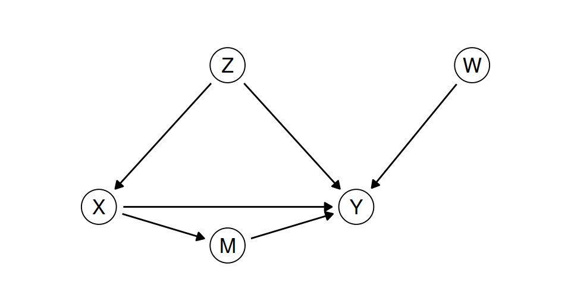

n <- 10000
Z <- rbinom(n, 1, 0.5) # worked last year
X <- rbinom(n, 1, ifelse(Z == 1, 0.8, 0.2)) # attended the course
Y <- rbinom(n, 1, 0.3 + 0.1 * X + 0.3 * Z) # in work six months later
mean(Y[X == 1]) - mean(Y[X == 0]) # attenders against the othersConsequences and causal models
Class
Note
This is the student version of the class sheet. Parts marked (class) are for the class; the rest are practice. Answers are revealed in class.
In class
- A discussion of the arguments you brought.
- Problem 1, by hand.
- Problem 2, by hand, then a discussion.
- One simulation in R, then a discussion.
- One more discussion.
Discussions are in groups of three or four, then with the room. Each problem, and the simulation, is gone through as soon as the room has tried it. Everything under “Optional, can be done at home” is practice for afterward.
Discussion 1: the arguments you brought
Put your arguments side by side and choose one.
- What is the action, and which outcome does the argument count?
- Draw the causal graph the argument needs, with an arrow for each cause-and-effect claim you listed. Mark the action.
- Draw a second graph that fits the same evidence and under which the action does nothing.
- How could the analysis go wrong if the first graph is wrong? What would the consequences of the wrong conclusion be, and for whom?
Each group’s two graphs go on the screen.
Problems
Before you start, from memory: what does the adjustment formula average, and with what weights?
1. Conditioning and intervening
A program in the style of the reading’s. \(U_1, \dots, U_5\) are independent, with \(U_1 \sim B(0.5)\), \(U_2 \sim B(0.6)\), \(U_3 \sim B(0.2)\), \(U_4 \sim B(0.4)\) and \(U_5 \sim B(0.1)\), where \(B(0.6)\) is 1 with probability 0.6 and 0 otherwise.
- \(X := U_1\) (exercise)
- \(W :=\) if \(X = 1\) then \(U_3\) else \(U_2\) (overweight)
- \(H :=\) if \(X = 1\) then \(U_5\) else \(U_4\) (heart disease)
Draw the graph.
Compute \(P(W = 1)\) and \(P(X = 0 \mid W = 1)\).
Compute \(P(H = 1)\), \(P(H = 1 \mid W = 1)\) and \(P(H = 1 \mid W = 0)\).
A program changes everyone’s weight to normal: \(W := 0\). Compute \(P(H = 1 \mid do(W := 0))\). What does the program do to heart disease?
Compute the average treatment effect of exercise on heart disease, and compare it with \(P(H = 1 \mid X = 1) - P(H = 1 \mid X = 0)\). Are they equal? Why?
2. Adjusting for a confounder
A school offers a revision app before an exam. Students who passed the previous year’s exam (\(Z = 1\)) are more likely to use it (\(X = 1\)). The outcome is passing this year (\(Y = 1\)).
| used the app (\(X = 1\)) | did not (\(X = 0\)) | |
|---|---|---|
| passed last year (\(Z = 1\)), 500 students | 400, of whom 320 passed (80%) | 100, of whom 70 passed (70%) |
| did not (\(Z = 0\)), 500 students | 100, of whom 50 passed (50%) | 400, of whom 120 passed (30%) |
Compute the pass rates of users and non-users, and the difference.
Draw the graph you would assume, and compute the average treatment effect of the app with the adjustment formula.
Compute the difference within each row. How does the average treatment effect combine the two?
A second school has the same pass rates within each cell of the table, but only 20% of its students passed last year. What is the average treatment effect of the app there?
A head teacher asks whether to buy the app for every student. Which of your numbers would you report, and what would you say about it?
Discussion 2: correlation and causation
“Correlation (more generally, association) is not causation.” This is true and important, but can it be misused?
Simulation: intervening in a program
The job center from the lecture, as a program. Each line generates one variable from the ones above it.
- Run it. Compare the difference with the lecture’s table.
- Compute the adjusted difference: the difference between attenders and non-attenders within \(Z = 1\) and within \(Z = 0\), averaged with weights
mean(Z == 1)andmean(Z == 0). - Intervene. Replace the line for
XbyX <- rep(1, n), run the line forYagain, and recordmean(Y). Do the same withX <- rep(0, n). Compare the difference with your answer to 2. - The center changes its referrals to 0.95 for \(Z = 1\) and 0.05 for \(Z = 0\). Before you run anything, write down what you expect for the differences in 1 and in 3. Then run it.
Discussion 3: causality and reproducibility
Can causality be useful in the context of reproducibility?
Discussion 4: writing the model down
Does consequentialism become more or less defensible once you have to write the causal model down? Answer it first for the argument your group drew at the start.
If there is time
- Can causality be useful for designing and communicating studies?
- A company tests two versions of its app on its users, without telling them, to see which version keeps them using the app longer. Which of the Belmont–Menlo principles does this touch? How would each of the four frameworks judge it?
- Find a sentence in a news report of an observational study that avoids saying “causes” but implies a cause. What graph does it assume?
To finish
One sentence, individually: what is the difference between \(P(Y = 1 \mid X = 1)\) and \(P(Y = 1 \mid do(X := 1))\)?
For next time
Bring one score or algorithm used to make decisions about people. Write down what it measures and what it stands in for. Every group’s examples will go on the screen.
Optional, can be done at home
Practice for afterward: problems 3 to 8, then coding A and B. The problems can be done by hand. Attempt each part before you open a hint.
WarningHints
Do not open a hint unless you have been stuck for at least a few minutes, and open them in order.
3. Omitted-variable bias
In the linear model of the notes, \(Z := U_Z\), \(X := \alpha Z + U_X\), \(Y := \beta X + \gamma Z + U_Y\), with independent mean-zero noise, take \(\alpha = 2\), \(\gamma = 1\), \(\beta = 0.5\) and \(\operatorname{Var}(Z) = \operatorname{Var}(U_X) = 1\).
Compute \(\operatorname{Var}(X)\), \(\operatorname{Cov}(X, Z)\) and the slope of \(Y\) on \(X\) alone.
Repeat with \(\gamma = -1\).
Repeat with \(\gamma = 1\) and \(\beta = 0\). What would someone with data on \(X\) and \(Y\) alone conclude?
Is the error in (a) a bias or a variance? What happens to it as the sample grows?
TipHint 1
\(Z\) and \(U_X\) are independent, so \(\operatorname{Var}(X) = \alpha^2 \operatorname{Var}(Z) + \operatorname{Var}(U_X)\).
4. Choosing an adjustment set

List the backdoor paths from \(X\) to \(Y\).
Which of these sets satisfy the backdoor criterion: the empty set, \(\{Z\}\), \(\{M\}\), \(\{Z, M\}\), \(\{W\}\), \(\{Z, W\}\)?
In a linear model, what does the coefficient on \(X\) estimate if you adjust for \(\{Z, M\}\)?
If more than one of the sets in (b) satisfies the criterion, which would you use, and why?
TipHint 1
A backdoor path starts with an arrow into \(X\). How many arrows point into \(X\)?
5. The graph behind an argument
A university says: “Students who use the library more get better grades. We will extend the library’s opening hours, because using the library improves grades.”
Draw the causal graph the argument presupposes, and mark the action.
Add one variable that would make the observed difference larger than the effect, with its arrows.
What comparison would support the university’s claim?
TipHint 1
The university’s evidence compares students. Its action changes opening hours. Are those the same thing?
6. Two registers
The decision whether to prescribe hormone therapy to prevent heart disease can be written in either register.
Write it in the prediction register. Say what the treatment, the outcome and a confounder are, and write the quantity a doctor needs with \(do(\cdot)\).
Write it in the sequential-decision register, with the one-line declaration at the top. Say what the state, the action, the reward, the policy and the utility are.
Which letters would mean different things if you used them in both answers?
7. Inverse probability weighting (harder)
Let \(e(Z) = P(X = 1 \mid Z)\), strictly between 0 and 1, and suppose \(Z\) satisfies the backdoor criterion.
Show that \(E[XY/e(Z)] = \sum_z E[Y \mid X = 1, Z = z]\,P(Z = z)\) by conditioning on \(Z\) first.
Write the matching expression for \(E[Y \mid do(X := 0)]\), and check both on the table in problem 2.
How many students does each app user stand for, in each row, and why?
Why are values of \(e(Z)\) near zero a problem in a sample?
TipHint 1
\(XY\) is zero unless \(X = 1\), so \(E[XY \mid Z] = E[Y \mid X = 1, Z]\,P(X = 1 \mid Z)\).
8. Hormone therapy
The 1996 estimate (0.39) and the 2008 estimates (1.42 over the first two years, 0.96 over the whole follow-up) come from the same cohort. Which comparison did each make?
Draw a graph under which the 1996 estimate is confounded.
Which comparison matches the decision a doctor makes, and why?
Coding
Open a fresh R script. You will need the tidyverse.
A. Prediction and intervention
n <- 10000
# program 1: X causes Y
X1 <- rnorm(n); Y1 <- 2 * X1 + rnorm(n)
# program 2: Z causes both
Z2 <- rnorm(n); X2 <- Z2 + rnorm(n); Y2 <- Z2 + rnorm(n)
# program 3: X causes Y through M
X3 <- sqrt(2) * rnorm(n); M3 <- X3 + sqrt(2) * rnorm(n); Y3 <- 0.5 * M3 + rnorm(n)- Write down the slope of \(Y\) on \(X\) you expect in each program. Then fit
lmand compare. - For each program, intervene: set \(X\) to 1 for everyone and run the statements after the one for \(X\) again, then the same with \(X\) set to 0. Compute the difference in the means of \(Y\).
- In program 2, fit
lm(Y2 ~ X2 + Z2). In program 3, fitlm(Y3 ~ X3 + M3). Compare the coefficients on \(X\) with your answers to 2.
TipHint 1
In each program, which statements after the one for \(X\) use \(X\), directly or through a variable computed from it? Those are the ones whose values change when you set \(X\).
B. Adjustment and weighting on data
cells <- data.frame(Z = c(1, 1, 0, 0), X = c(1, 0, 1, 0),
n = c(400, 100, 100, 400), passed = c(320, 70, 50, 120))
students <- bind_rows(
cells |> mutate(Y = 1, count = passed),
cells |> mutate(Y = 0, count = n - passed)
) |>
select(Z, X, Y, count) |>
tidyr::uncount(count)
nrow(students)[1] 1000- Compute the pass rates of users and non-users from
students, and their difference. - Compute the adjusted difference: the difference in pass rates within each value of \(Z\), averaged with weights \(P(Z = z)\).
- Compute \(e(Z)\), the share of users within each value of \(Z\), attach it to each student, and compute
mean(X * Y / e)andmean((1 - X) * Y / (1 - e)). - A randomized version: give each of 1,000 students the app with probability 0.5, whatever their \(Z\), and draw whether they pass from the table’s rates. Compute the difference in pass rates. Repeat 200 times. What is the average difference, and how much does it vary?
TipHint 1
For 3: students |> group_by(Z) |> mutate(e = mean(X)) |> ungroup().